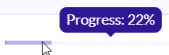

Basic query for C and C++ code¶
Learn to write and run a simple CodeQL query using LGTM.
About the query¶
The query we’re going to run performs a basic search of the code for if statements that are redundant, in the sense that they have an empty then branch. For example, code such as:
if (error) { }
Running the query¶
In the main search box on LGTM.com, search for the project you want to query. For tips, see Searching.
Click the project in the search results.
Click Query this project.
This opens the query console. (For information about using this, see Using the query console.)
Note
Alternatively, you can go straight to the query console by clicking Query console (at the top of any page), selecting C/C++ from the Language drop-down list, then choosing one or more projects to query from those displayed in the Project drop-down list.
Copy the following query into the text box in the query console:
import cpp from IfStmt ifstmt, BlockStmt block where ifstmt.getThen() = block and block.getNumStmt() = 0 select ifstmt, "This 'if' statement is redundant."
LGTM checks whether your query compiles and, if all is well, the Run button changes to green to indicate that you can go ahead and run the query.
Click Run.
The name of the project you are querying, and the ID of the most recently analyzed commit to the project, are listed below the query box. To the right of this is an icon that indicates the progress of the query operation:
Note
Your query is always run against the most recently analyzed commit to the selected project.
The query will take a few moments to return results. When the query completes, the results are displayed below the project name. The query results are listed in two columns, corresponding to the two expressions in the
selectclause of the query. The first column corresponds to the expressionifstmtand is linked to the location in the source code of the project whereifstmtoccurs. The second column is the alert message.Note
An ellipsis (…) at the bottom of the table indicates that the entire list is not displayed—click it to show more results.
If any matching code is found, click a link in the
ifstmtcolumn to view theifstatement in the code viewer.The matching
ifstatement is highlighted with a yellow background in the code viewer. If any code in the file also matches a query from the standard query library for that language, you will see a red alert message at the appropriate point within the code.
About the query structure¶
After the initial import statement, this simple query comprises three parts that serve similar purposes to the FROM, WHERE, and SELECT parts of an SQL query.
Query part |
Purpose |
Details |
|---|---|---|
|
Imports the standard CodeQL libraries for C/C++. |
Every query begins with one or more |
|
Defines the variables for the query.
Declarations are of the form:
|
We use:
|
|
Defines a condition on the variables. |
|
|
Defines what to report for each match.
|
Reports the resulting |
Extend the query¶
Query writing is an inherently iterative process. You write a simple query and then, when you run it, you discover examples that you had not previously considered, or opportunities for improvement.
Remove false positive results¶
Browsing the results of our basic query shows that it could be improved. Among the results you are likely to find examples of if statements with an else branch, where an empty then branch does serve a purpose. For example:
if (...) {
...
} else if (!strcmp(option, "-verbose") {
// nothing to do - handled earlier
} else {
error("unrecognized option");
}
In this case, identifying the if statement with the empty then branch as redundant is a false positive. One solution to this is to modify the query to ignore empty then branches if the if statement has an else branch.
To exclude if statements that have an else branch:
Extend the
whereclause to include the following extra condition:and not ifstmt.hasElse()
The
whereclause is now:where ifstmt.getThen() = block and block.getNumStmt() = 0 and not ifstmt.hasElse()
Click Run.
There are now fewer results because
ifstatements with anelsebranch are no longer reported.